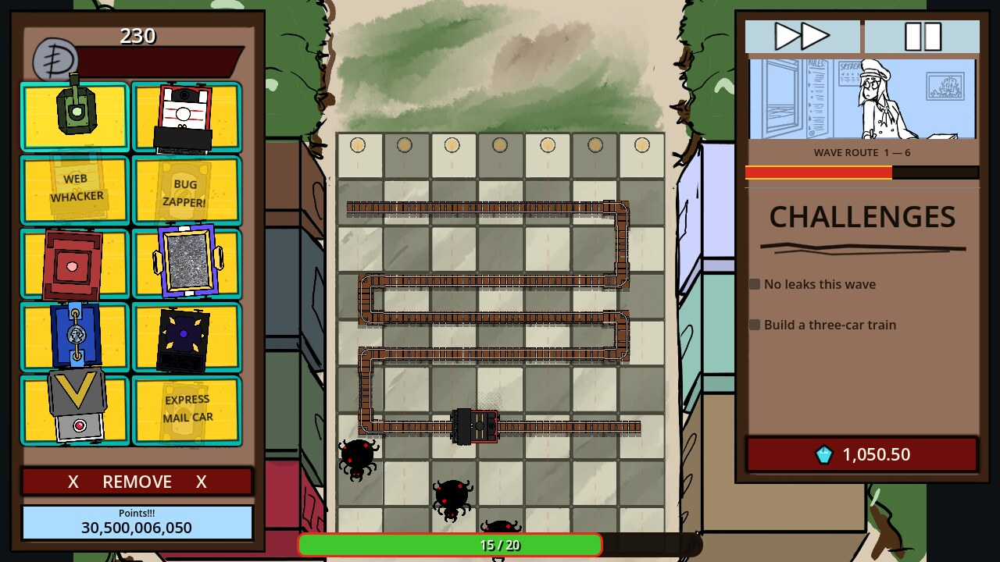

Battle Stations
A tower-defense game where the turrets are train cars, not towers. Illustrated toy trains patrol a procedurally generated tabletop railway, defending against paper spiders converging from every side — built in Godot 4 and shipped straight to the browser through GitHub Actions.
Play it in your browser


Overview
Battle Stations is a browser tower-defense game with one twist: there are no towers. Every defense — a machine-gun car, a slowing car, a splash-damage cannon car — is a piece of rolling stock you drag onto a moving train, and the train itself is the thing patrolling the board and fighting for you. Spiders spawn around the edges of a tabletop-sized courtyard and walk toward a station at the bottom; your train, or trains, have to intercept them along the way.
It's built in Godot 4 (GDScript), exports straight to WebAssembly, and deploys itself: every push to the repo triggers a GitHub Actions workflow that builds the Web export and publishes it to GitHub Pages. The live build is always whatever's on the main branch.
Approach
The whole interface is built around one constraint: it has to look like a hand-drawn comic board game, not a clean web app. Thick uneven black outlines, warm burgundy and bright cyan, paper and ink texture, a handwriting font (Architects Daughter) for anything that would normally be UI chrome. The shop tray on the left is a crooked 2×5 grid of illustrated cards — some are real, purchasable train cars, a few are deliberately fake joke cards ("Web Whacker," "Bug Zapper!") that exist purely because a tidy inventory grid didn't feel like a toy box.
Underneath that, the actual game loop is standard tower-defense math: a currency wallet, wave-scaled spider health and spawn rate, per-car weight that slows a train down past a threshold, and a procedurally generated courtyard railway so the board isn't identical every run.
Most of it was built working turn-by-turn with Claude Code as a pair programmer rather than writing every line by hand — describing a mechanic or pasting in a mockup image, then reading and adjusting the generated GDScript and scene files directly.
Key Decisions
Turrets are train cars, not towers
A standard tower-defense turret sits still. Making every weapon a car you couple onto a moving engine instead does two things at once: it gives the trains an actual reason to exist as a game object (rather than being purely decorative), and it means the board reads as "toys defending themselves" rather than "a grid with gun emplacements on it." The tradeoff is real — a turret that's also constantly repositioning is harder to reason about for both the player and the code (target acquisition, follow-the-engine's-movement-history logic, what happens when a car's train reverses direction) — but it's the choice that actually matches the illustrated reference the whole project is chasing.
Verify UI changes by actually launching the build, not by reading the diff
Godot scene files are plain text, so it's tempting to trust that a diff "looks right" and move on. In practice, running the actual game — headless in CI, and in an isolated virtual display with real mouse events for anything interactive — caught things a code review never would. The clearest example: a button central to starting a wave had visible = false baked into the scene from the very first commit it was added in. It had been silently dead the entire time, masked by an unrelated auto-start timer that made the button unnecessary. The moment that timer was removed as part of an unrelated change, launching the build and looking at the screen — not reading the script — is what caught it before it shipped as a soft-lock.
- Headless Godot (
--headless --quit-after N) to catch script/scene parse errors on every meaningful change - A throwaway Xvfb display plus real synthetic mouse events for anything that needs an actual interaction — dragging a card onto a train, pausing, clicking a button — because a screenshot of a static scene doesn't prove the input handling underneath it works
- Screenshotting a clean git worktree at the last-pushed commit specifically, rather than the working tree, whenever a claim needs to match what's actually live
A file sitting on disk isn't the same as a file that's committed
A player reported that newly added turret cars were invisible once placed on the board — no error, no missing-texture checkerboard, just nothing there. Every local test said otherwise: the Chaingun, the Tender, the reskinned Gunner and Ballast all rendered perfectly, over and over, across a dozen fresh launches. The scene files were right. The art was right. The bug wasn't in the code at all — it was in git. The .tscn files referencing the new artwork had been committed, but the actual PNGs they pointed at never got git added, so they only ever existed on the machine that made them. Every local checkout still had the files physically sitting in the working tree regardless of what git thought was tracked, which is exactly why local testing kept passing while the deployed build — built from a clean checkout with nothing extra lying around — silently had no texture to load.
- Cross-referenced every asset path inside every committed scene/script/resource against
git ls-files, rather than trusting that "it's in the folder" meant "it's in the repo" - Confirmed the fix against a
git worktreechecked out at the exact commit — the same isolation a CI runner or a fresh clone gets — instead of the working directory, which still had every untracked file sitting right there to mask the problem - Re-verified by actually purchasing and placing each affected car in that clean checkout before pushing, not just checking that the import step ran without errors
Result & Impact
The core loop is live and playable: drag a car onto the train, watch it fight, survive the wave, spend the payout on the next car. The courtyard railway regenerates every run, the illustrated shop tray mixes real and joke cards on purpose, and the whole thing ships to a public URL automatically on every push — no manual export or upload step. The roster has grown since launch — a Chaingun car for sustained single-target fire, a non-combat Tender that extends a train's hauling capacity — and the missing-texture bug above shipped and got caught and fixed within the same day it was reported, deploy pipeline included.
Learnings
- A scene file that "looks correct" in a diff can still be dead on arrival — the only real proof is launching the thing and looking at the screen
- Handing an AI pair programmer a reference illustration and asking it to match the mockup, rather than describing the desired UI in words, produced a much closer result than a purely text-based spec would have
- Deploy automation pays for itself almost immediately on a solo hobby project — not having to remember the export flags or the upload step means changes actually get tested in the real target environment (a browser) instead of "probably works in the editor"
- Committing to an aesthetic constraint (hand-drawn, imperfect, crooked) early made a lot of later UI decisions easier, not harder — "does this look like a toy box or a settings menu" is a much faster gut check than trying to reason about visual hierarchy from scratch every time
- "It works on my machine" is a literal, specific hazard when new art assets and the scene files referencing them can get committed in separate, unsynchronized steps — the fix was checking every referenced asset path against
git ls-files, not just re-running the game locally